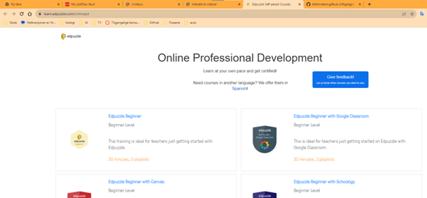

Erfaringsdeling Nettskolen Rogaland (12.desember 2019 / 20 april 2023 / 25 januar 2024)
Før du skal komme i gang med å lage Interaktive Videoer selv, litt om oppsett fra dette opplegg. Her blir det presentert mer informasjon om 2 webapper: EdPuzzle og PlayPosit. Begge 2 har omtrent lik funktionalitet når det gjelder innebygd interaktivitet i videoer. Men, det dreier seg ikke bare om å lage interaktive videoer her. I tillegg er det mye om lage klasser og følge med med alle som går i din klasse. Ja, jeg vet, vi har også Teams og heldigvis er det ikke så utfordrende å bygge inn interaktive videoer i oppgaver eller chats, notater og websider i Teams. Dette med å ha styring i interaktive viceoer er litt ekstra.
La oss komme i gang... For noen år siden, dd. 23.mai 2018, har jeg fortalt litt om EdPuzzle, hvordan det virker til å å lage interaktive videoer og noen eksempler. Heldigvis har alt dette blitt dokumentert, klikk her for å se på websiden igjen.
I de siste årene har det ikke forandret seg så mye. Utseende og oppsett for EdPuzzle er litt annerledes, men hovedprinsippene til å lage interaktive videoer er helt lik, heldigvis.
For å begynne igjen med Edpuzzle, kan du gå til EdPuzzle sin veiledingswebside, (Online Professional Development), klikk her (webside kommer opp i et nytt vindue) (Se på bilde ovenfor, til venstre). Her kan du utvikle deg selv til en EdPuzzle spesialist! Veldig bra egnet for å bli kjent med den nyeste versjon av EdPuzzle. Ikke bare å lage interaktiv videoer (bare en lite del fra level 1), men spesielt mer om gi oppfølging til elevene og gode strategier til å bruke slike webressurser. Og mye mer!
Når du har lært til hvordan å lage interaktive videoer, kan du lage en lærerkonto her. Først, velg Sign up og deretter velg I'm a Teacher.